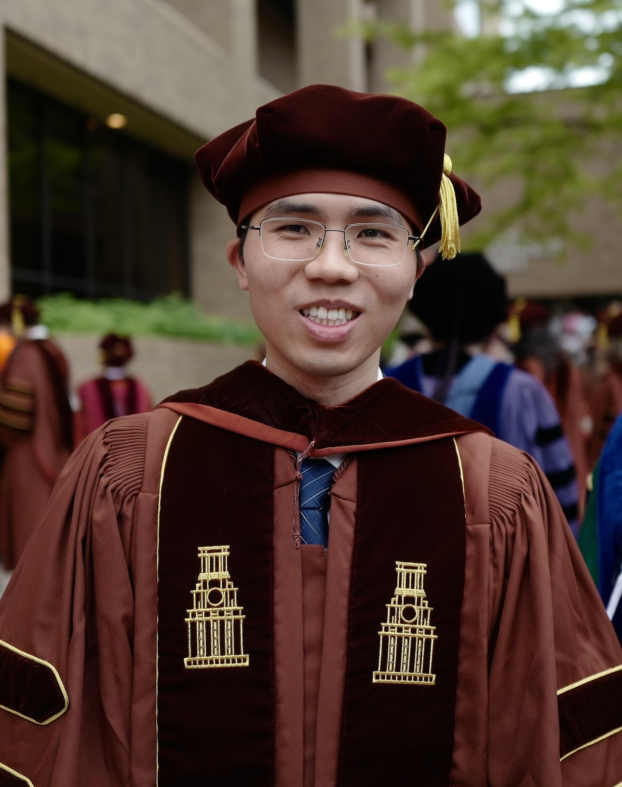

Ruichen Jiang
|
 |
Postdoctoral Researcher,
|
About me
I am a postdoctoral researcher at Google Research in New York City. My research develops optimization algorithms using ideas from online learning, with current interests in convex and nonconvex optimization.
I received my Ph.D. in ECE from UT Austin, where I was advised by Prof. Aryan Mokhtari.
During my Ph.D., I worked as a Student Researcher at Google Research and as an Applied Scientist Intern at Amazon Web Services. Before UT, I received a B.E. in Electronic Engineering and a B.S. in Mathematics both from Tsinghua University in 2020.
Selected Works
Adaptive Matrix Online Learning through Smoothing with Guarantees for Nonsmooth Nonconvex Optimization
(α-β order) Ruichen Jiang, Zakaria Mhammedi, Mehryar Mohri, and Aryan Mokhtari
COLT 2026Improved Complexity for Smooth Nonconvex Optimization: A Two-Level Online Learning Approach with Quasi-Newton Methods
(α-β order) Ruichen Jiang, Aryan Mokhtari, and Francisco Patitucci
STOC 2025Accelerated Quasi-Newton Proximal Extragradient: Faster Rate for Smooth Convex Optimization
Ruichen Jiang and Aryan Mokhtari
NeurIPS 2023 (Spotlight)Online Learning Guided Curvature Approximation: A Quasi-Newton Method with Global Non-Asymptotic Superlinear Convergence
Ruichen Jiang, Qiujiang Jin, and Aryan Mokhtari
COLT 2023A Conditional Gradient-based Method for Simple Bilevel Optimization with Convex Lower-level Problem
Ruichen Jiang, Nazanin Abolfazli, Aryan Mokhtari, and Erfan Yazdandoost Hamedani
AISTATS 2023Generalized Optimistic Methods for Convex-Concave Saddle Point Problems
Ruichen Jiang and Aryan Mokhtari
SIAM Journal on Optimization, 2025